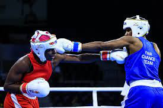

Vasilean Victor HTML
Vasilean Victor
Activitati practice
Box

Boxing Boxul (sau pugilismul) este un sport marțial străvechi (probabil cel mai vechi sport marțial, cu origini preistorice), în care doi concurenți, cu greutăți similare, luptă cu ajutorul pumnilor, într-o serie de reprize, numite runde. Victoria este obținută in urma punctelor date pentru lovituri de catre juriu, sau atunci când adversarul este doborât la pâmânt și nu reușește să se ridice înainte ca arbitrul să termine de numărat până la 10, (engleză Knockout sau KO) sau când adversarul este prea rănit pentru a continua (engleză Technical Knockout sau TKO).
Boxul amator este atât un sport olimpic, cât și un sport al Jocurilor Commonwealthului și este un element comun în majoritatea jocurilor internaționale - are, de asemenea, propriul său Campionat Mondial.
În timp ce oamenii s-au luptat în luptă mână-la-mâna de la începutul istoriei umane, cele mai timpurii dovezi ale concursurilor sportive de luptă cu pumnul datează din Orientul Antic în mileniul al III-lea și al II-lea î.Hr.[1] Cele mai vechi dovezi ale regulilor boxului datează din Grecia Antică, unde boxul a fost stabilit ca un joc olimpic în 688 î.Hr.[1]
Boxul a evoluat de la primele lupte ale secolului al XVI-lea, al XVII-lea și al XVIII-lea, în mare parte în Marea Britanie, la precursorul boxului modern, de la mijlocul secolului al XIX-lea, odată cu introducerea Regulamentului Marchizului de Queensberry (Marquess of Queensberry Rules, dar scris. de fapt, de galezul John Graham Chambers) din 1867.
.
Kart
 Kart Racing Kart racing or karting is a road racing variant of motorsport with open-wheel, four-wheeled vehicles known as go-karts or shifter karts. They are usually raced on scaled-down circuits, although some professional kart races are also held on full-size motorsport circuits. Karting is commonly perceived as the stepping stone to the higher ranks of motorsports, with many former and current Formula One drivers such as Sebastian Vettel, Nico Rosberg, Ayrton Senna, Max Verstappen, Lewis Hamilton, Michael Schumacher, Kimi Räikkönen and Fernando Alonso, having begun their careers in karting.
Karts vary widely in speed and some (known as superkarts) can reach speeds exceeding 161 kilometres per hour (100 mph), while recreational go-karts intended for the general public may be limited to lower speeds.
Kart Racing Kart racing or karting is a road racing variant of motorsport with open-wheel, four-wheeled vehicles known as go-karts or shifter karts. They are usually raced on scaled-down circuits, although some professional kart races are also held on full-size motorsport circuits. Karting is commonly perceived as the stepping stone to the higher ranks of motorsports, with many former and current Formula One drivers such as Sebastian Vettel, Nico Rosberg, Ayrton Senna, Max Verstappen, Lewis Hamilton, Michael Schumacher, Kimi Räikkönen and Fernando Alonso, having begun their careers in karting.
Karts vary widely in speed and some (known as superkarts) can reach speeds exceeding 161 kilometres per hour (100 mph), while recreational go-karts intended for the general public may be limited to lower speeds.
despre kart
- 1 Kart-ul e rapid.
- 2 Nu este nevoie de experienta
- 3 Sunt nevoie de investite enorme
- 4 Este nevoie de reactie buna
Obiecte preferate si nota
| Romana |
L.italiana |
Fizica |
Istoria |
Matematica |
| 9,33 |
10 |
9,53 |
10 |
9,40 |
Alte hobbyuri
Activitatile
- Pictura
- echitatie
- Muzica
- Calatorii
- Privirea filmelor
- Pimbari cu familia
Sfarsit!
Vasilean Victor cl.11-A"A"